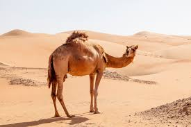
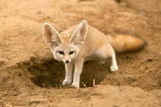
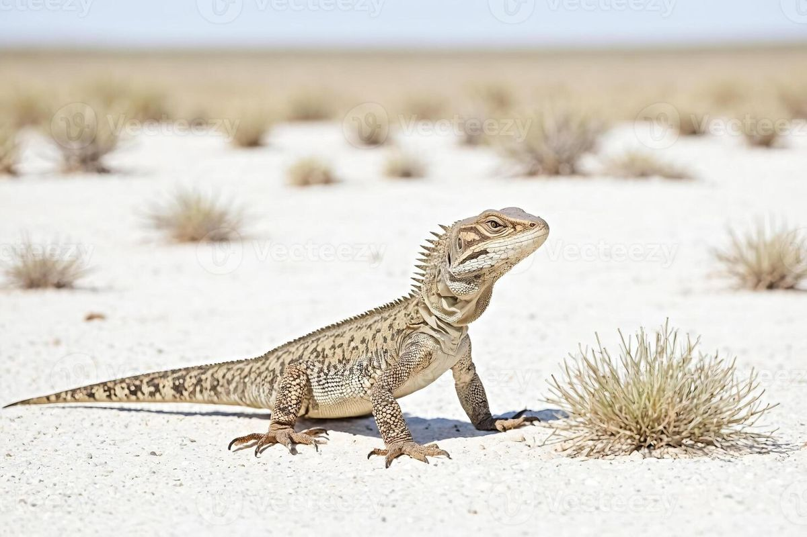
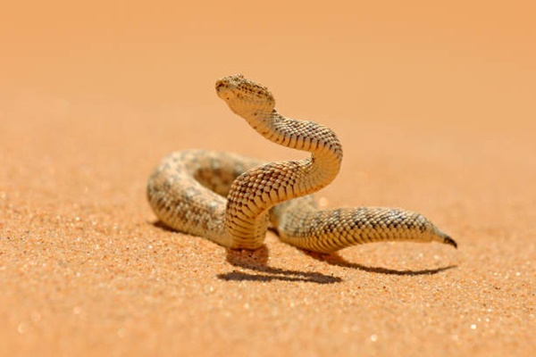
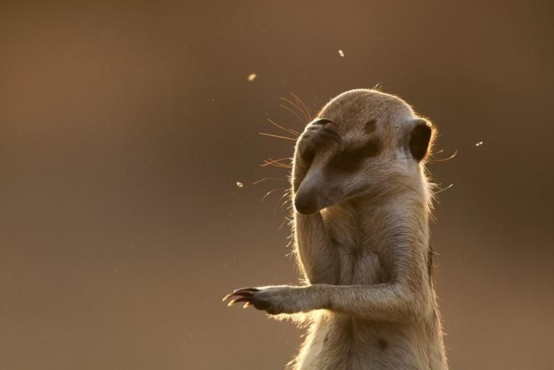
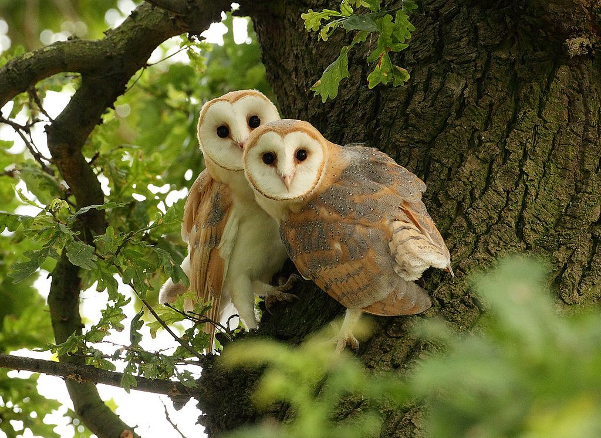
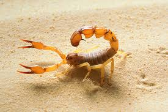
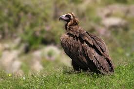

Canguru
Eles tem uma Habilidade
de lutas forte o suficiente para quebrar ossos humanos

Camelo
Eles podem ficar até 8 dias ou mais
sem beber água, dependendo das condções, e quando encontram água
podem beber até 120 litros em 10 minutos.

Raposa do deserto
A Audição delas
permitem ouvir a movimentação de presas mesmo debaixo da areia.

Lagarto
Eles soltam a cauda
em situações de Perigo para enganar o predador.

Víbora
possuem olhos com Pupila Vertical
igual ao um gato, isso ajuda a caçar em situações de pouca
luz.

Suricato
Não pesam nem 1 kilo, um suricato
adultopesa cerca de 700 gramas.

Coruja
Tem o voo totalmente silencioso
por conta das suas penas, o que torna perfeito para
caçar.

Escorpião
São Fluorescentes
sob luz violeta, a casca deles reage e brilha em verde/azul.

Abutre
tem uma visão excelente podendo enxergar carcaças e
movimentos a quilômetros de distância.